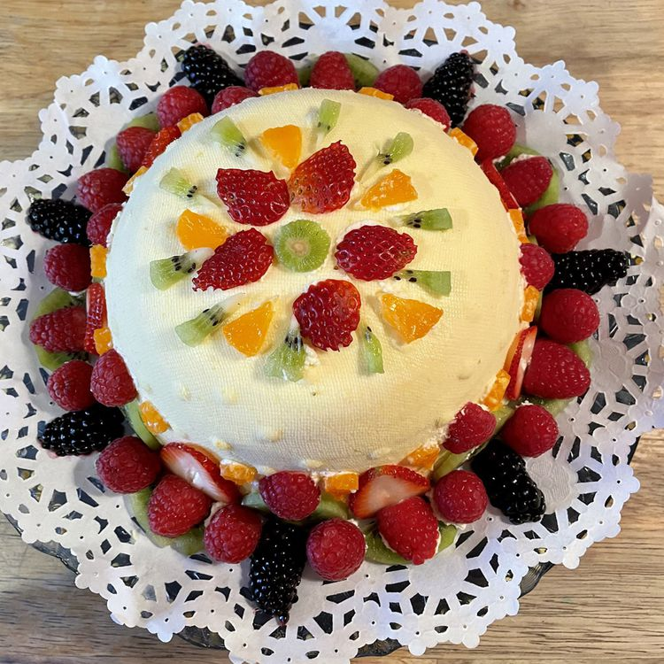

Easter Cake

Description
This unbaked cheese paska was one of my mother Sofia's traditional Ukrainian Easter recipes. She passed away in
1995, so I have been making it ever since. It's very rich, easy to make, and always a hit. Decorate with the
fruits of your choice.
Ingredients
- 16 ounces farmer's cheese
- 12 ounces cream cheese (such as Philadelphia), softened
- ½ cup unsalted butter, softened
- 4 hard-boiled egg yolks
- 1 cup superfine white sugar
- 1 teaspoon vanilla extract
- 1 teaspoon lemon juice
- 1 teaspoon grated lemon zest, or more to taste
- 1 teaspoon grated orange zest, or more to taste
Steps
- Combine farmer's cheese, cream cheese, butter, and egg yolks in the bowl of a stand mixer fitted with a
paddle attachment; mix on low speed to combine. Add sugar, vanilla extract, lemon juice, lemon zest, and
orange zest; mix until smooth.
- Line a sieve with dampened cheesecloth, leaving an overhang on all sides. Place over a plate that will catch
any additional liquid that drains out. Spoon paska mixture into the cheesecloth. Fold the ends of the
cheesecloth over the mixture. Cover with a plate and set a heavy weight on top. Chill until firm, 8 to 24
hours.
- Remove the weighted plate and unfold the cheesecloth ends. Use the cheesecloth ends to lift the paska out.
Invert onto a plate and peel away the cheesecloth.
Home